Instalacja Arch Linuxa
Moja przygoda z instalacja archa.
Instalacja pod UEFI.
Na początku sprawdźmy nasze dyski żeby określić na którym urządzeniu chcemy stworzyć partycje i zainstalować Archa.
można się posłużyć 2 komendami (lsblk) - lista urządzeń blokowych lub (fdisk -l) polecenie wyświetla listę dysków.
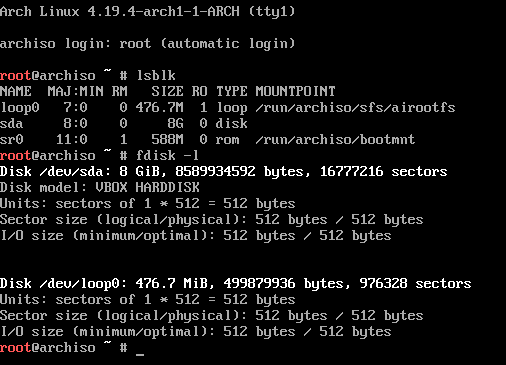
Dyski znajdują się w folderze /dev czyli device (z angielskiego urządzenia) są one numerowane alfabetycznie od a do z,
kiedy jesteśmy pewni jakiego dysku chcemy użyć pora utworzyć partycje za pomocą (cfdisk).
Utworzymy teraz 3 partycje 512mb dla gruba, 5gb na system, i 2.5gb dla urzytkownikow.
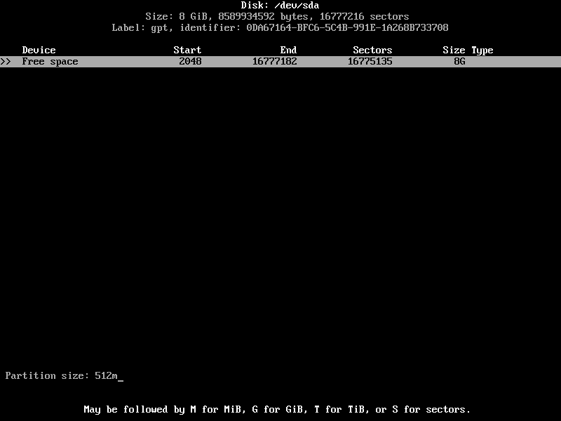
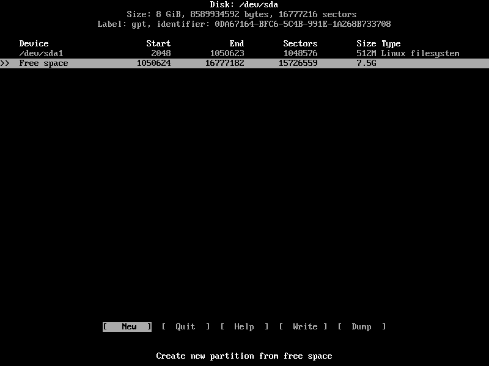
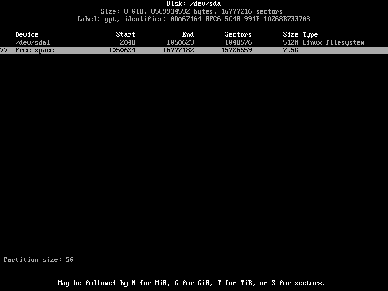
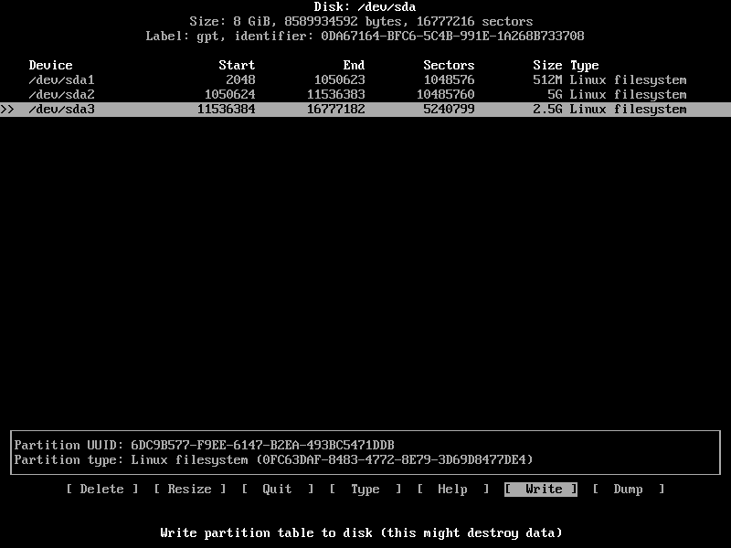
Sprawdzamy utworzone partycje polecaniami lsblk lub fdisk -l jak kto woli.
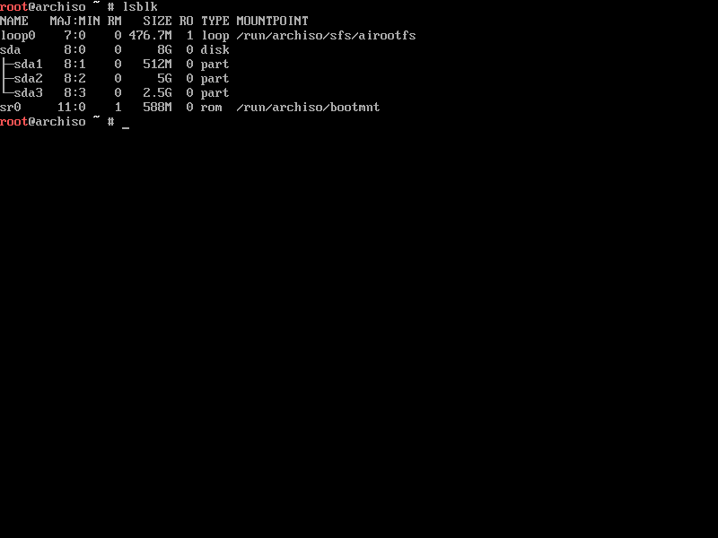
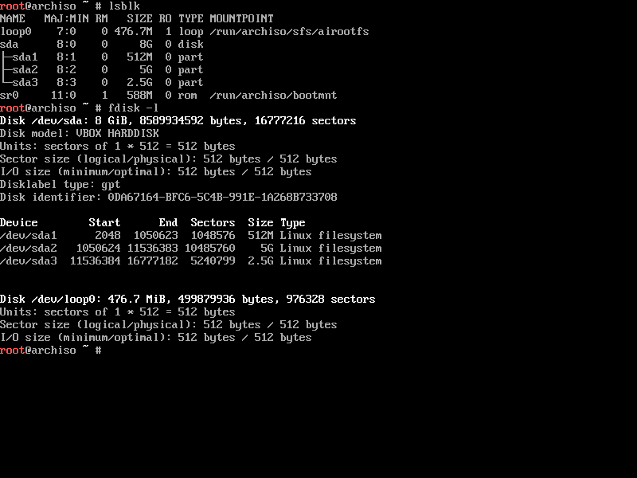
Tworzymy 3 systemy plików fat32 dla gruba za pomocą polecenia mkfs.fat -F32, ext4 dla systemu oraz użytkowników na 2 partycjach za pomocą mkfs.ext4.
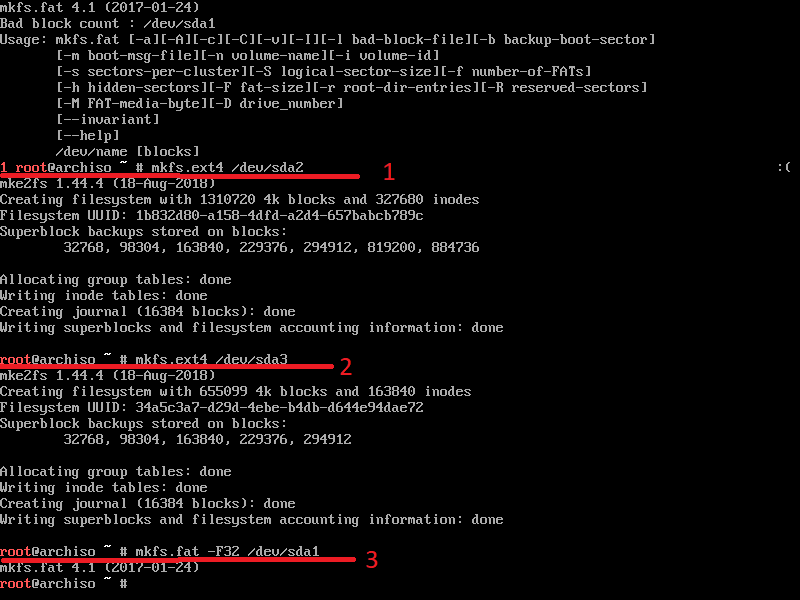
Czas zamontować partycje w katalogu /mnt stworzyć folder /home, oraz zamontowanie go w odpowiednim miejscu.
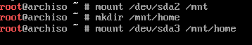
Zobaczmy jak się zamontowały nasze partycje poleceniem lsblk.
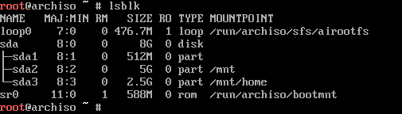
Czas na instalacje systemu za pomocą polecenia (pacstrap -i) nasza partycje na system zamontowaliśmy w /mnt wiec wskazujemy w tym miejscu ma się zainstalować system,
oraz pokazujemy mu że interesuje nas paczka base-devel.
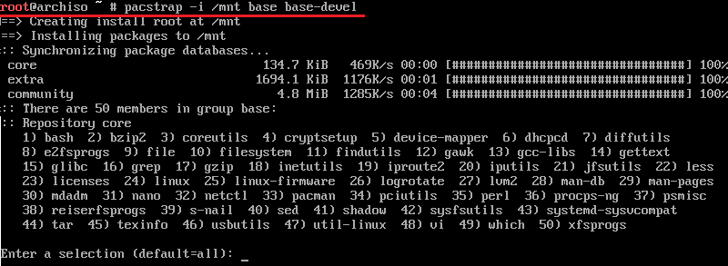
Przeklikujemy enterem ponieważ chcemy wszystkie pakiety oraz na końcu potwierdzamy wpisując y.

Po instalacji powinnyśmy mięć takie okno.
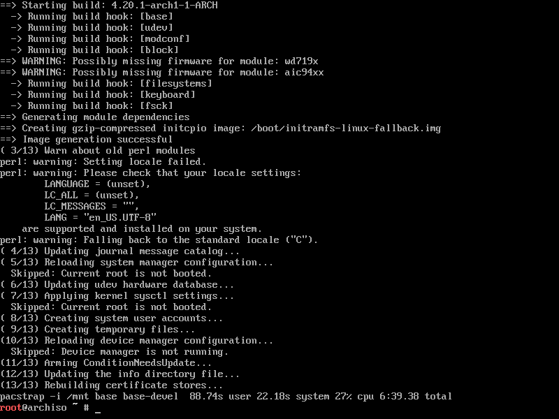Generujemy fstab oraz odpalamy system w chroot za pomocą arch-chroot.
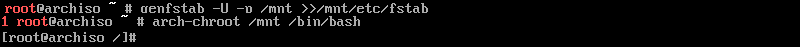
Czas ustawić opcje językowe otwieramy edytorem nano plik /etc/locale.gen i usuwamy komentarz (#) pl_PL.UTF-8 UTF-8.
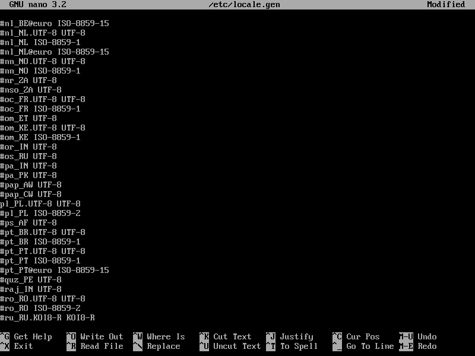
Generujemy ustawienia języka, tworzymy dowiązanie symboliczne do strefy czasowej i ustawiamy zegar systemowy, po czym zajmujemy się nazwą hosta za pomocą echo.
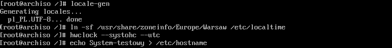
Konfigurujemy plik hosts dla pętli zwrotnej.
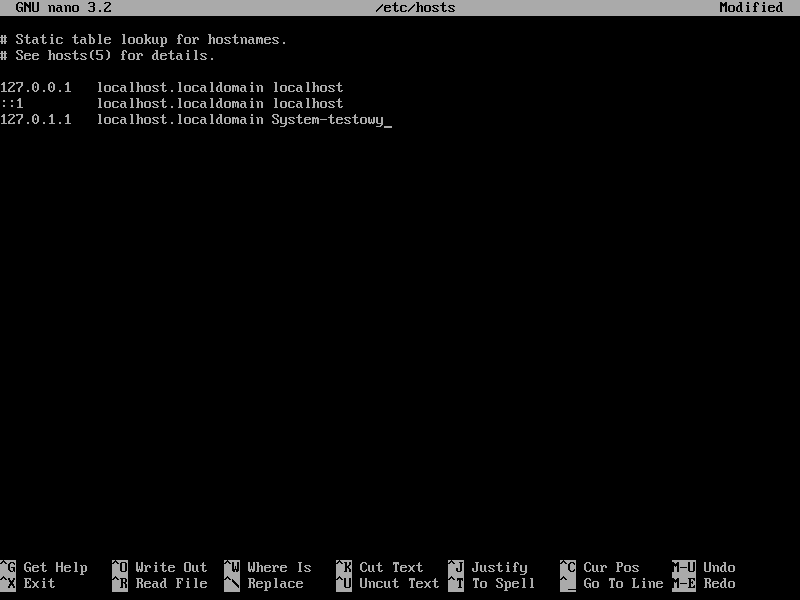
Instalujemy NetworkManager, aby mieć możliwość konfiguracji sieci w naszym systemie.
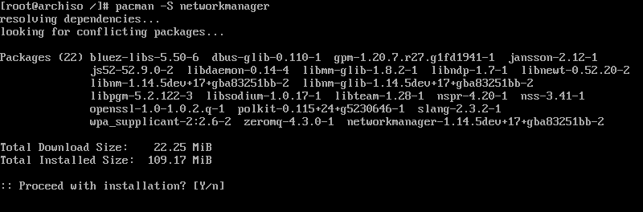
Włączamy NetworkManager dla systemd by był włączony przy starcie systemu.
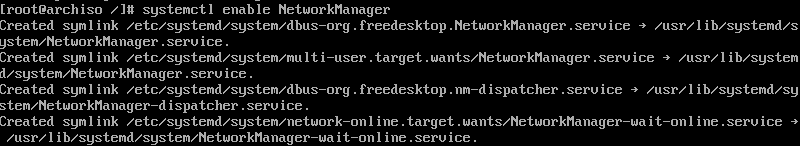
Kolejną ważną kwestią jest zmiana hasła dla użytkownika root.
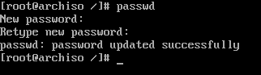
Instalujemy grub oraz efibootmng.
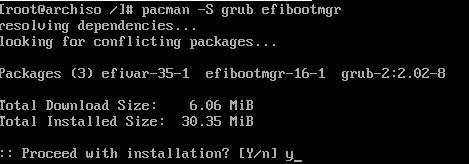
Tworzymy folder /boot/efi oraz montujemy tam nasza partycje 512mb z systemem plików fat32.
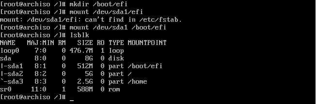
Instalujemy gruba, generujemy konfiguracje poleceniem grub-mkconfig, tworzymy katalog /boot/efi/EFI/BOOT
następnie kopiujemy tam plik jak na obrazku niżej zmieniając nazwę na podaną z dużej litery.
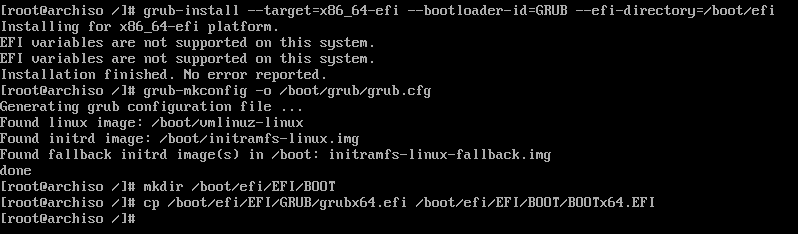
Tworzymy/edytujemy plik /boot/efi/startup.nsh wpisując co na obrazku pamietamy, aby używać \ do oznaczenia ścieżki.
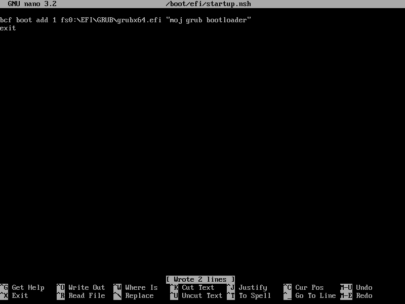
wychodzimy z chroot, odmontujemy zamontowane partycje rekursywnie za pomoca (umount -R).
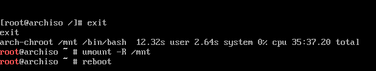
Logujemy sie do systemu jako root.
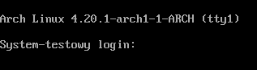
Dodajemy użytkownika ja dodałem urzytkownika (filemon) z flagami -m żeby stworzyć katalog użytkownika w /home,
flaga -s wybiera z jakiej powłoki chcemy korzystać -g dodaje grupę -G wheel dodaje konto do grupy wheel.
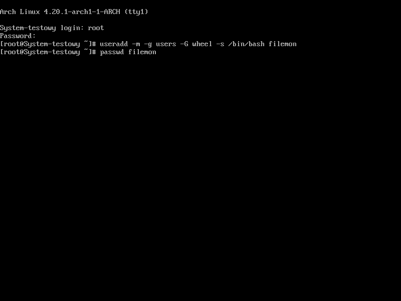
Czas na pozwolenie użytkownika z grupy wheel na korzystanie z sudo ale najpierw zmiana edytora dla polecenia visudo.
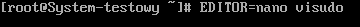
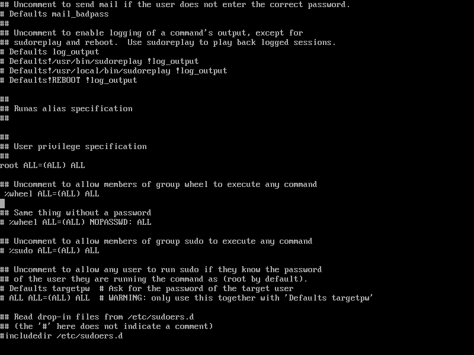
Można teraz się wylogować i zmienić na utworzonego użytkownika, któremu można teraz podnosić uprawnienia za pomocą polecenia sudo.
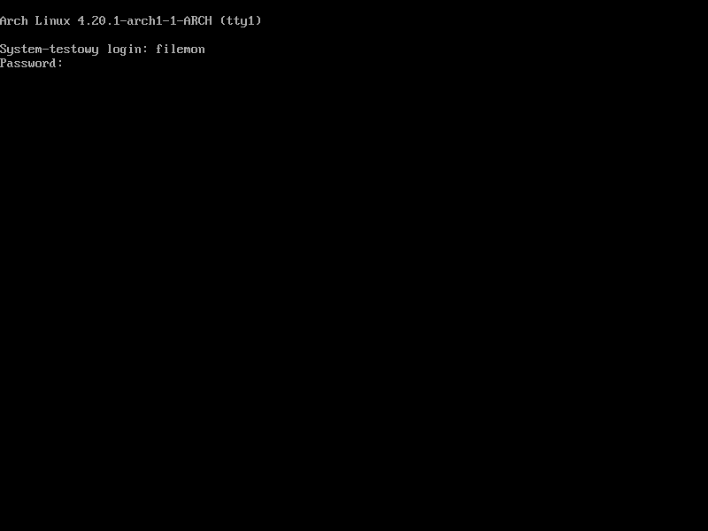
Czas na konfiguracje sieci za pomocą nmtui.
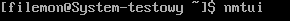
Nie mam zamiaru opisywał konfiguracji sieci u każdego może być inna.
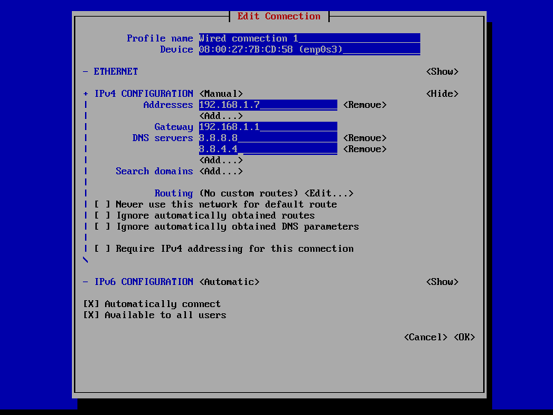
Sprawdzamy konfiguracje poleceniem (ip a).
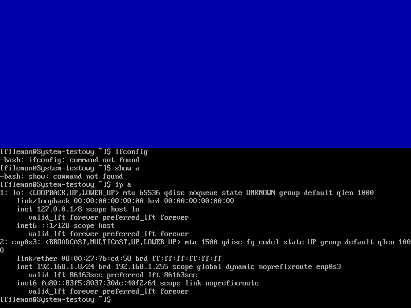
Zajmiemy się teraz Instalacja GUI, pakiet na niebiesko jest tylko w wypadku instalacji w virtualboxie.
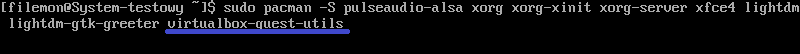
Dopiszmy konfiguracje, żeby xorg server wiedział, jakie GUI ma uruchomić my zainstalowaliśmy xfce4 oraz aby podczas startu systemu odpalał się menadżer okien,
następnie pozostało już tylko odpalić GUI za pomocą polecenia startx.
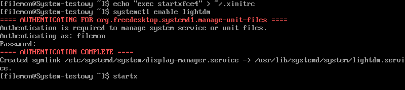
Gratulację zainstalowałeś Archa wraz z GUI!!
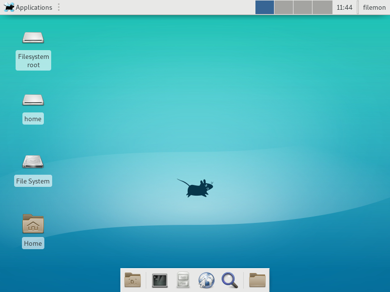